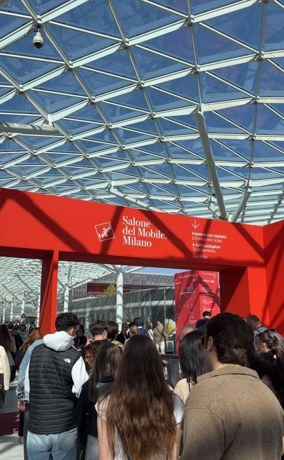
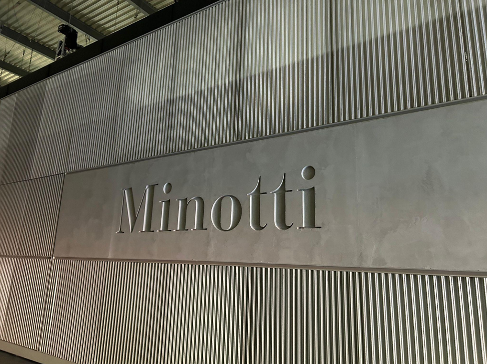
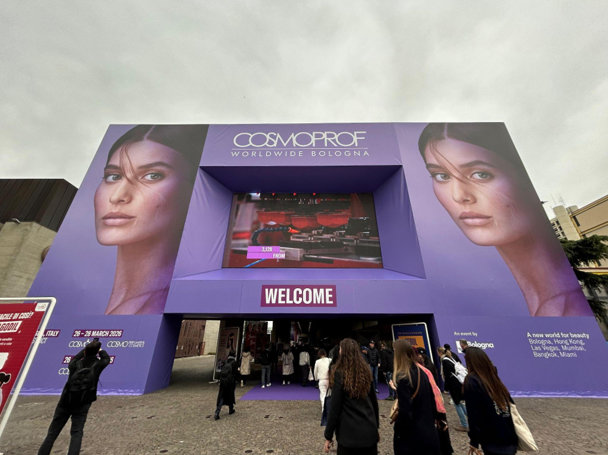
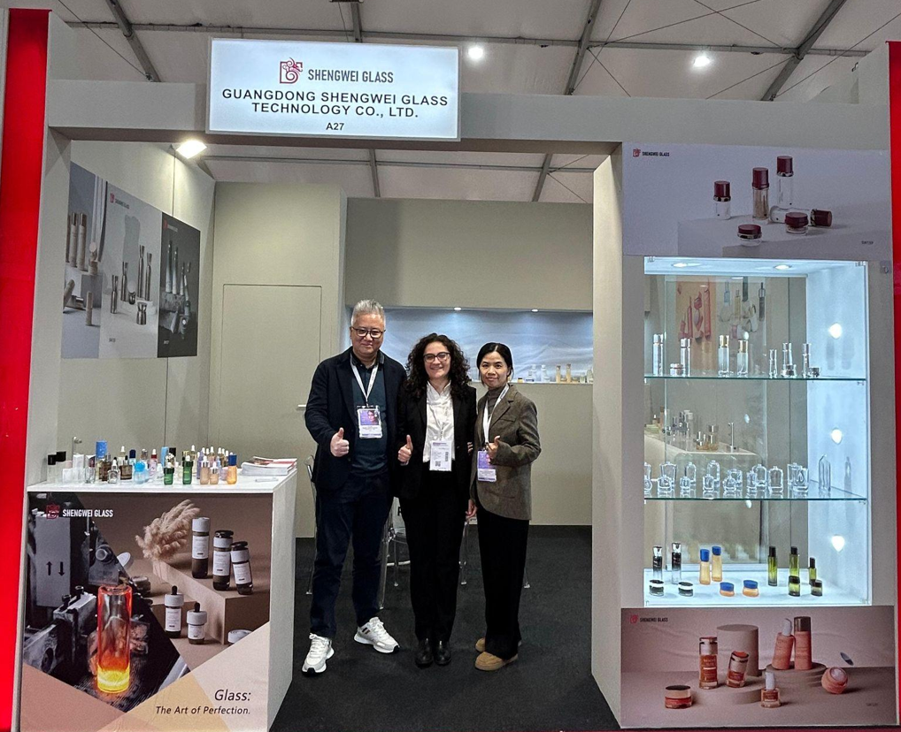
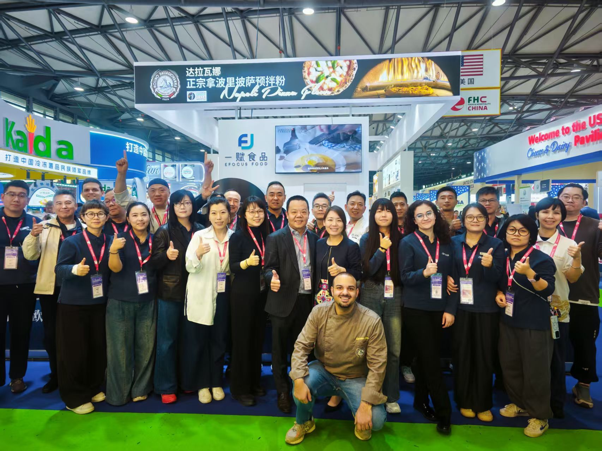
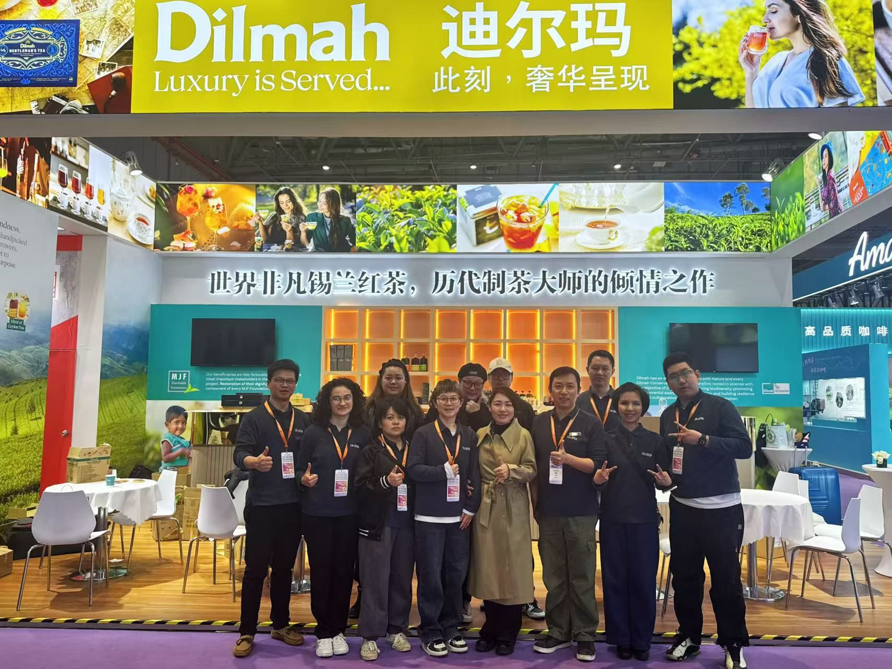
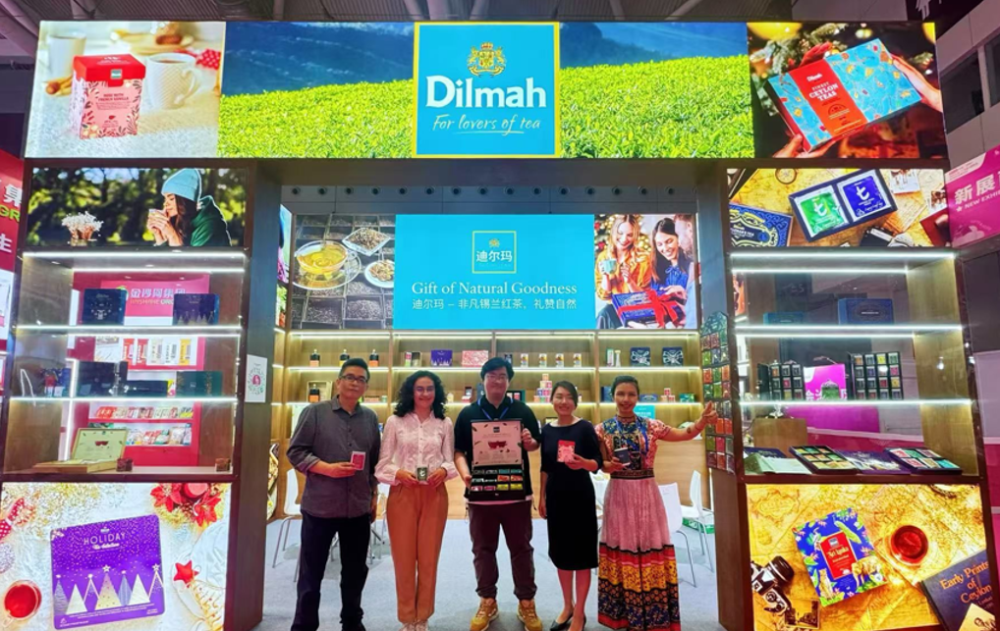
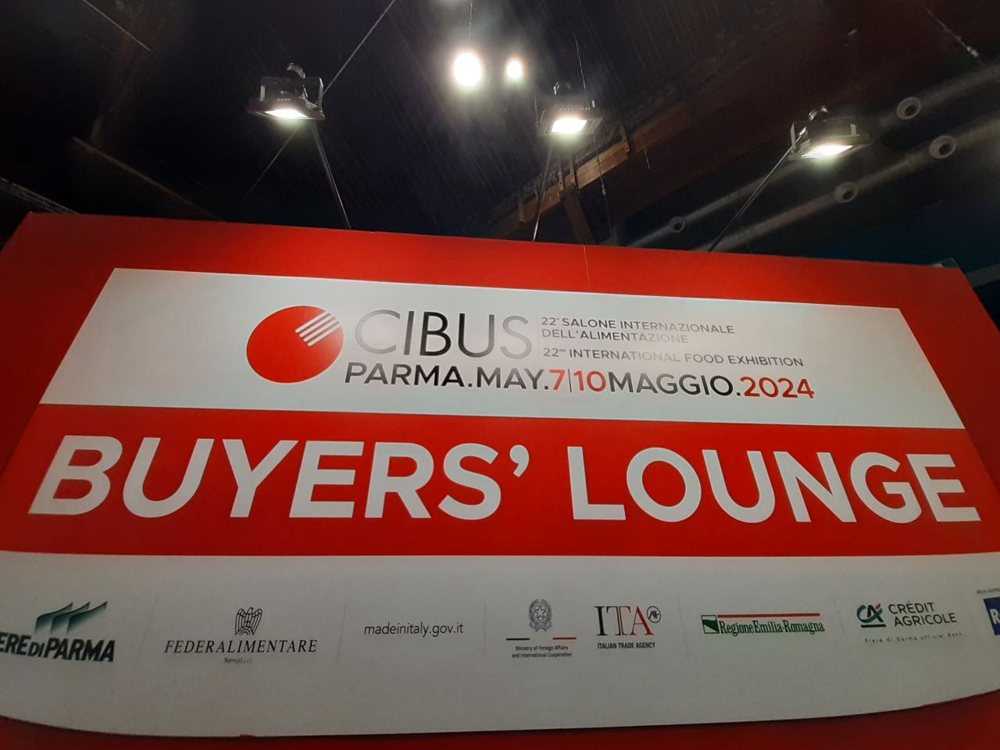
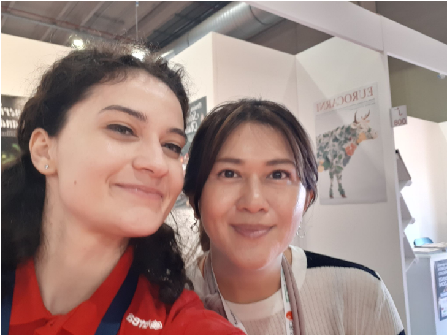
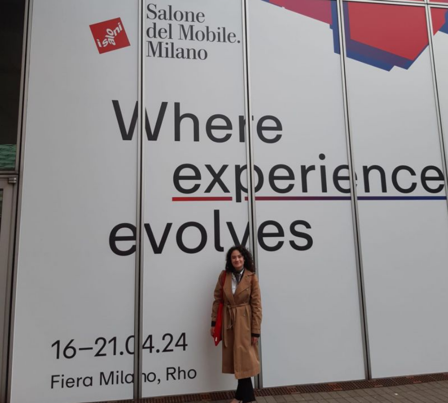

Interpretazione
Interpretazione di trattativa o B2B
Fiere, incontri commerciali
Concentrati sui numeri, io mi occupo di trasferire il tuo messaggio nel pieno rispetto dell'etichetta straniera.
La mia esperienza come unica dipendente straniera in un'azienda cinese mi ha insegnato molto di più della lingua commerciale. Lavorando nel marketing, vendite e gestendo brand italiani in Cina, ho interiorizzato la logica del business e dei consumatori cinesi, il meccanismo della contrattazione e come superare i momenti di stallo.